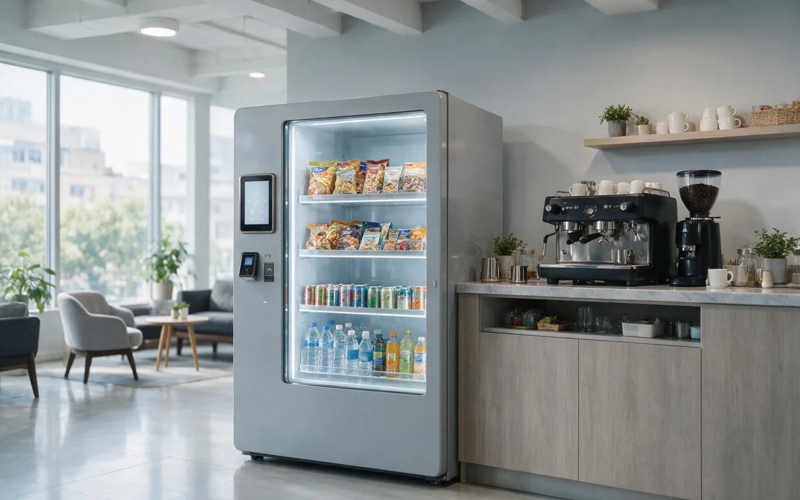

AI Vending for Offices

The scenario
Office workers are time-rich during the day but convenience-poor. The cafeteria closes by early afternoon, the nearest café is a ten-minute walk, and the 3 PM energy crash is real. An AI vending unit placed near the break room, elevator bank, or conference area turns an underused corner into a small pantry that serves every work mode — morning coffee, lunch cover, the afternoon slump, and late-night deadlines — without adding any facilities staff.
For employers, the unit is part of the workplace experience. A well-stocked pantry reduces the friction of the workday, keeps people on the floor instead of walking to a café, and reads as a tangible perk. For operators, offices offer one of the most predictable demand curves in retail: the same people, the same hours, every working day.
Who you are serving
- Employees. High-income, health-conscious, and time-pressured. They buy on routine — morning coffee, lunch, the 3 PM snack — and they care about quality and freshness.
- Meeting-heavy roles. People who live in conference rooms buy coffee, energy bars, and quick meals between sessions.
- Late workers and early arrivals. The 7 AM and 7 PM crowds are underserved by every staffed option in the building.
- Facilities and HR. They care about employee satisfaction, cleanliness, and a perk that does not create work for them.
The defining pain point is the after-cafeteria gap. Work continues after 2 PM, and the 3–8 PM window generates real demand for snacks, coffee, and meal replacements that no staffed option serves. The second pain point is the emergency item — a dead phone before a meeting, a sudden headache, a coffee stain on a shirt.
Why AI vending fits
- Demand is extremely predictable: the same workforce, the same hours, five days a week.
- The gap between the cafeteria closing and the end of the workday is a proven, unserved revenue window.
- Employees are health-conscious and willing to pay for fresh, functional options — the mix can be wellness-led, not junk-led.
- A unit costs the employer nothing to staff and can be offered as an employee perk with subsidized pricing if desired.
- Enclosed cabinets with automatic billing fit an office environment cleanly, with no queues and no shrinkage theater.
Peak buying windows
- Morning coffee (7–10 AM): coffee, breakfast bars, and hydration as people arrive.
- Lunch cover (12–2 PM): fresh food, meal replacements, and drinks when the cafeteria is closed or crowded.
- Afternoon crash (2–4 PM): energy bars, sparkling water, and healthy snacks — the 3 PM window is a daily ritual.
- Late work (6–8 PM): meal replacements and dinner alternatives for people working past the cafeteria’s hours.
Where to place the unit
- Break room or kitchen. The anchor location. Employees already gather here, so the unit needs no discovery.
- Elevator bank or main corridor. High pass-through traffic catches the impulse purchase between meetings.
- Conference floor. Meeting attendees buy 2–3 items per break; a unit here serves the busiest hours of the day.
- Reception or lobby. Serves visitors and employees arriving, plus delivery drivers waiting.
- Wellness or fitness rooms. In larger campuses, a unit near the gym captures post-workout demand.
How to choose products for this venue
Office buyers are health-conscious and routine-driven, so the mix should feel like a curated pantry — wellness-forward with a little indulgence. The three-layer framework, tuned for the workday:
Traffic drivers (hydration and afternoon fuel)
- Premium bottled water, sparkling water, cold brew, clean energy drinks, and unsweetened iced tea.
- These replace the junk-soda default with a daily ritual and guarantee repeat visits.
Profit drivers (fresh food and clean nutrition)
- Microwaveable gourmet meals, wraps, salads, yogurt, protein bars, and popcorn.
- Employees will pay $7–10 for a clean, fresh lunch over heavy fast food. Recognizable healthy brands outsell generic snacks by a wide margin.
- This is the revenue engine — and it competes with food delivery, which is slow, disruptive, and expensive.
Workplace essentials (high margin)
- Phone cables, earbuds, OTC pain relievers, hand lotion, breath mints, and stain-remover pens.
- These solve the mid-day crisis — a dead phone before a meeting, a sudden headache, a coffee stain — at the highest margins in the unit.
Rotate seasonally and test one new item every few weeks. The workforce changes, so the mix should too.
How to arrange the shelves
Employees browse quickly between tasks, so the unit must look organized and curated — like a premium pantry, not a machine:
- Top shelves (workplace essentials): chargers, earbuds, pain relievers, and hand lotion — the eye-level reminder for "I need this" moments.
- Middle shelves (eye level, profit zone): fresh sandwiches, cold brew, protein boxes, and premium snacks — the lunch and afternoon-energy zone.
- Bottom shelves (staples): large water bottles, sparkling water, and heavier drinks.
Keep the wellness-forward items prominent and front-facing. Clean, bright, and labeled shelves signal quality, which is what office buyers respond to.
Running the unit well
- Restock rhythm: a full restock twice a week with a quick top-up mid-week usually covers a standard office. Time restocks around, not during, peak break hours.
- Payments: contactless cards and mobile wallets are essential. No apps, no accounts — employees want a tap and go.
- Employee perks: if the company wants to subsidize snacks or coffee, credits can be tied to employee accounts or badges through the operator’s platform, with no checkout friction.
- Fresh food discipline: refrigerated units need temperature logging and date labeling; remove unsold fresh items on a fixed schedule to protect quality and trust.
- Data: use sales data to match stock to the workweek — Monday and Tuesday mornings, for example, sell different things than Friday afternoons.
What success looks like
An office unit’s health is best read through adoption, not a single revenue number. Track:
- Adoption rate — the share of employees who buy in a given week. This is the metric that predicts everything else.
- Transactions per day — with the morning and 3 PM windows as the benchmarks.
- Items per transaction — whether merchandising is driving multi-item grabs like coffee plus a snack.
- Fresh-food sell-through — waste above a small threshold means the mix or cadence is off.
- Employee satisfaction signals — internal feedback and usage growth are the real return for HR and facilities.
Common mistakes to avoid
- Stocking like a break-room afterthought. Chips and soda alone underperform a wellness-led mix in an office.
- Pricing healthy options too high. The 3 PM snack should be an easy yes, not a decision.
- Ignoring fresh food. The lunch and dinner-alternative windows are the revenue engine; skipping them leaves money on the table.
- Restocking during peak hours. Blocking the unit at 12:30 PM is a direct hit to sales.
- Forgetting the facilities partnership. Placement, cleaning, and power should be agreed before installation, not discovered after.
Frequently asked questions
What sells best in an office?
Water, coffee, and cold brew drive daily traffic; fresh meals, protein bars, and healthy snacks drive revenue in the lunch and afternoon windows.
Should the employer subsidize items?
Many companies do — often by pricing coffee or snacks at cost or via a monthly credit per employee. It is a cheap, visible perk that drives adoption.
How do employees pay?
Contactless cards and mobile wallets. If the company offers credits, they can be tied to employee accounts or badges so a tap applies them automatically.
Who restocks and maintains the unit?
The operator handles stocking, maintenance, and payments. Facilities only coordinates placement, power, and cleaning.
Is fresh food risky in an office?
It has more waste risk than packaged snacks, so start small, label dates, and let sales data decide how much to carry.